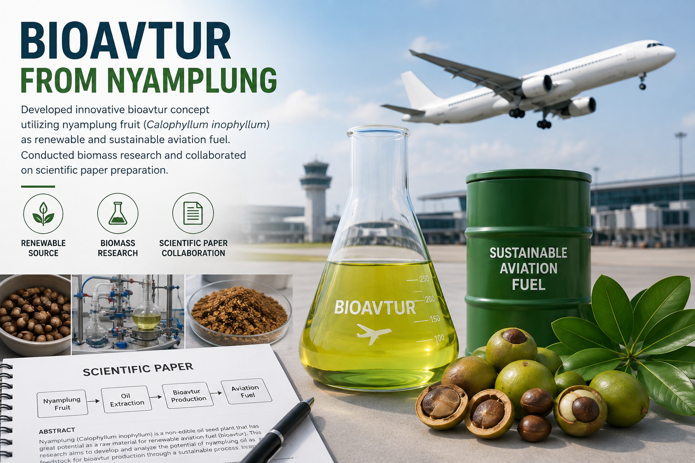

3RD PLACE — SUSTAINABLE INNOVATIONS ESSAY COMPETITION (SINEC) · AUGUST 2025
Bioavtur from Nyamplung
Developed innovative bioavtur concept utilizing nyamplung fruit (Calophyllum inophyllum) as renewable and sustainable aviation fuel. Conducted biomass research and collaborated on scientific paper preparation.